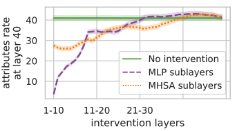

Factual Association
October 15, 2024 • Achyut Kowshik, Sheridan Feucht
If you ask a (decent) LLM to complete the sentence "Coltrane plays the ___", it will probably say "tenor" or "saxophone". In order to accurately predict the next word, the model has to be able to "understand" who John Coltrane is, and then retrieve information on what instrument he plays. But how does it do this? Where do LLMs store information about the world, and how do they process and retrieve it? These papers on factual assocation try to answer that question.
Linear Associative Memory
A lot of current work in factual association builds off the foundational idea of
linear associative memory. In one of David's PhD papers,
they refer to this 1972 paper
that illustrates how you can use a matrix \( M\) to store pairs of vectors \( (k_i, v_i) \).
This can approximately done with any kind of matrix.
\[
v_i \approx Wk_i
\]
You can actually do this retrieval perfectly if you have orthonormal keys. The way you
do so is by constructing a matrix that is the sum of the outer products of every desired pair, \(v_ik_i^T \).
Each one of these outer products is a rank one matrix that we can accumulate to create \( M \),
which has a rank equal to the number of pairs that it is storing.
\[
M \mathrel{\mathop:}= \sum_i v_ik_i^T
\]
In practice, the authors refer to Kohonen (1973),
which shows that you can store more keys than the maximum rank of the matrix if you allow them to be non-orthogonal,
with some amount of error.
\[
W_0 \mathrel{\mathop:}= \underset{W}{\text{argmin}}\sum_i||v_i - Wk_i||^2
\]
David et al. come up with a way to
pack a new \((k_*,v_*)\) pair in there by doing this minimization with
the constraint that \( v_* = Wk_*\). They use this math to edit the convolutional weights of GANs so that they
obey arbitrary user-defined rules, like making horses wear hats, or trees grow out of church towers.
But what if we can use this to understand fact retrieval in language models?

Locating and Editing Factual Associations in GPT
The first paper for today by Meng et al. presents an approach for locating and modifying factual associations in language models.
Kevin Meng, a researcher at MIT, focuses on model interpretability and efficient language model editing techniques.
David Bau, an assistant professor at Northeastern University, is known for his work in mechanistic interpretability of neural networks.
Alex Andonian, affiliated with MIT, has expertise in deep learning applications and structural analysis of neural models.
Yonatan Belinkov, a professor at Technion - Israel Institute of Technology, specializes in natural language processing and machine learning, particularly in analyzing neural models' behavior and robustness.
The authors introduce a method to identify specific weights that encode factual knowledge and perform rank-one updates
to alter it, enabling targeted edits without significant side effects. The focus is on enabling targeted edits
that change specific model outputs while preserving unrelated information, allowing for more controllable language models.
Causal Tracing
Building on the method of locating factual associations, the next step involves understanding causal tracing. Causal tracing is a technique used to identify which parts of a model are responsible for specific outputs, by tracing how information flows through the network. The authors used causal tracing to pinpoint the weights that influence specific factual associations, which was a crucial precursor to the ROME approach. This allowed them to determine how best to modify the model's knowledge effectively.
ROME
With the insights gained from causal tracing, the next step was to develop a method for making precise, targeted edits to a language model's factual knowledge. This led to the concept of Rank-One Model Editing (ROME), which focuses on efficiently altering specific associations without extensive retraining or impacting other knowledge stored in the model.
The ROME approach involves creating a rank-one update that modifies the components identified during causal tracing. By targeting these specific elements, the authors ensured that the model's knowledge could be updated with minimal disruption. For instance, changing "Coltrane plays saxophone" to "piano" could be accomplished without affecting unrelated information. \[ \text{minimize } ||\hat{W}K - V|| \text{ such that } \hat{W}k_* = v_* \text{ by setting } \hat{W} = W + \Lambda (C^{-1} k_*)^T \]
The above equation updates the model weights (\(\hat{W}\)) to ensure that a specific key (\(k_*\)) maps to a new desired value (\(v_*\)). By doing this, the equation allows the model to learn a new fact effectively, like changing "Coltrane plays the saxophone" to "piano", without negatively impacting the model's other learned facts.
Editing one MLP layer with ROME: To associate the Space Needle with Paris, the ROME method inserts a new \((k_*, v_*)\) association into layer \(l_*\), where (a) key \(k_*\) is determined by the subject, and (b) value \(v_*\) is optimized to select the object. (c) hidden state at layer \(l_*\) and token \(i\) is expanded to produce (d) the key vector \(k_*\) for the subject. (e) To write the new value vector \(v_*\) into the layer, (f) we calculate a rank-one update \(\Lambda(C^{-1} k_*)^T\) to ensure \(\hat{W}^{(l)}_{proj} k_* = v_*\), while minimizing interference with other memories stored in the layer.
This method highlights the importance of localizing the relevant information before making edits, ensuring that factual changes are both precise and effective.
Does Localization Inform Editing?
A year or so later, some researchers from Google and UNC Chapel Hill wrote a response to David's paper. Hase et al. show that localization conclusions from causal tracing do not provide any insight into which MLP layer would be best to edit in order to override an existing stored fact with a new one. They suggest that a fact stored in a model can be changed by editing weights that are in a different location than where causal tracing suggests that the fact is stored.
Their experiments indicate that while ROME's approach works for some edits, there are many cases where localized modifications
do not capture the true breadth of the factual association in the model, leading to incomplete or unintended changes.
The critique here is that factual knowledge isn't just localized in individual weights. Instead, multiple parameters
and layers are involved in the retrieval and association, thus complicating the editing process beyond a simple rank-one update.
Dissecting Recall of Factual Associations
This paper from October 2023, available here, is authored by Mor Geva, Jasmijn Bastings, Katja Filippova, and Amir Globerson. The authors are affiliated with Google DeepMind and Tel Aviv University.
Their motivation for this research stemmed from the observation that while there has been significant progress in locating where factual knowledge is stored in transformer-based language models, very little is known about how this knowledge is retrieved during inference. By studying how a model handles subject-relation queries, they aimed to uncover the information flow that enables correct attribute prediction, ultimately offering deeper insight into how these models function.
The diagram below shows how the recall process works, with key points such as subject enrichment, relation extraction, and attribute retrieval visualized to explain the flow of information through the model:
The authors performed several experiments to explore how factual knowledge is retrieved, focusing on the following key techniques:
- Attention Knockout: In this experiment, specific attention heads were disabled (knocked out) to determine their contribution to factual recall. The results indicated that middle-upper attention layers play a critical role in retrieving key information from subject positions directly to the last positions, while other layers have minimal impact.
- Subject Representation Enrichment using Sublayer Knockout: The authors used sublayer knockout to understand which parts of the transformer layer add crucial information to subject representation. They zeroed out both the MHSA and MLP sublayers across 10 layers and measured the impact on attribute recall. Results showed that knocking out MLP sublayers reduced the attribute rate by about 88%, while MHSA knockouts had a smaller effect (<30%). This confirms the findings of Meng et al. that early-middle MLP sublayers play a significant role in storing factual associations. 
- Attribute Extraction to the Last Position: Finally, the authors investigated how attributes are extracted at the final position by comparing the predicted token with the top-token from each MHSA sublayer update. Extraction events were defined when there was agreement between these tokens. Below result shows the effect of blocking the last position from attending to different positions, suggesting that both MHSA and MLP implement attribute extraction, but MHSA is the prominent mechanism for factual queries.
A big takeaway here is that factual editing of LLMs is a promising direction, but we are far from fully understanding the underlying structure. I think combining localized editing (like ROME) with broader entanglement analysis could lead to even more robust methods in the future.
Linearity of Relation Decoding
The last paper for today from David's lab looks at factual association from a slightly different angle. Based on the idea that factual information is stored in early layers, they try to linearly approximate the process by which an LLM would "read out" that information for its final output. This would only really work if models were near-linear when decoding relations.
Concretely, this means that the authors have to come up with some clever way to
get a weight matrix and bias that can be applied to a hidden state \(s\) to
output \(o\), the state right before the model outputs its answer. In the image
below, they basically want to skip over the entire blue part of model processing,
going straight from \(s\) to \(o\).
 The way that the authors ultimately build these approximators does not require
any gradient descent. If \(F(s,c)\) is the function the transformer is
typically performing to map \(s\) to \(c\), they take the first-order Taylor
approximation where \(W = \partial F/\partial s\):
\[ F(s,c) \approx F(s_0, c) + W(s - s_0) \]
\[ F(s,c) \approx Ws + F(s_0, c) - Ws_0 \]
This approximation is just an affine transformation, with a bias \( F(s_0, c) - Ws_0 \).
In practice, they calculate \(W\) by averaging the Jacobian of \( F \) for
a few examples \(s_i, o_i \).
The way that the authors ultimately build these approximators does not require
any gradient descent. If \(F(s,c)\) is the function the transformer is
typically performing to map \(s\) to \(c\), they take the first-order Taylor
approximation where \(W = \partial F/\partial s\):
\[ F(s,c) \approx F(s_0, c) + W(s - s_0) \]
\[ F(s,c) \approx Ws + F(s_0, c) - Ws_0 \]
This approximation is just an affine transformation, with a bias \( F(s_0, c) - Ws_0 \).
In practice, they calculate \(W\) by averaging the Jacobian of \( F \) for
a few examples \(s_i, o_i \).
Are these LREs faithful?
The authors calculate these approximations for a number of relations and measure how faithful they are to the outputs of the original model. In other words, what fraction of the time do they output the same token as the actual model? Their Figure 3 shows that some relations can be approximated extremely well in this way, like encodings of gender bias (occupation -> gender), whereas relations like (company -> CEO) are more difficult to approximate. This indicates that these relations are calculated in some non-linear manner; they require a bit more calculation to get out.
Are these LREs causal?
If these LREs are actually causally related to model behavior, then we should be able to use them to manipulate model outputs. They do an experiment where they try to change the output associated with a subject (e.g. make the model say that Miles Davis plays the guitar). If you have \((s, r, o) = \) (Miles Davis, plays instrument, trumpet) and \((s', r, o') = \) (Cat Stevens, plays instrument, guitar), then The authors derive that you should be able to add a special vector \( \Delta s = W^{-1}(o'-o)\) to \( s \) to make it look like \(s'\), resulting in the model outputting \(o'\). This only works if \(W\) is causally related to model behavior. And in fact they show that their approach actually works slightly better than just directly substituting \(s'\) in place of \(s\). This is a really good sign that \(W\) reads relational information in the same way that the model does itself.Bonus: Identifying Linear Relational Concepts
A little while after this paper was released, researchers at University College London built on their work to create linear relational concepts (LRCs). They create an LRE for some relation and get a low-rank pseudo-inverse of the LRE, which is just \( W^\dagger \) from the original paper. When they apply that \( W^\dagger \) to "York" or "Shanghai", they get specific vectors that represent the concepts "Located in England" and "Located in China." Then, given some hidden state representation of a place, e.g. "Boston", they dot its representation with every "Located in" vector. Whichever vector has the highest dot product they take as the answer. They argue that this method works a lot better than probing those hidden states using an SVM.Code
Causal TracingROME
LRE Demo
Attribute Lens